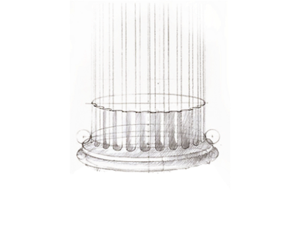

Innovative ideas
need champions.
Innovative ideas to hold government and special interests accountable need courageous champions
January 14th 2023 | The Omni Barton Creek, Austin TX
6:00pm Cocktail Reception | 7:00pm Dinner & Program
Join Joe & Tayler Lonsdale, The Cicero Institute, elected officials, and leading entrepreneurs for an evening celebrating courage in public life.
by invitation only
Event Info
Date
January 14th, 2023
6:00pm Cocktail Hour & Reception
7:00pm Dinner & Awards Program
Location
The Omni Barton Creek
8212 Barton Club Dr, Austin, TX
We have reserved a block of rooms for our out-of-town guests at a special rate. Please visit this site to reserve your room at the Omni Barton Creek.
Featuring a special keynote speaker
About the Cicero Courage Awards
We founded the Cicero Institute to pursue a new vision of public
policy in America — one that draws on the lessons of
entrepreneurship and innovation to improve public systems and
preserve liberty for future generations.
In just a few short years, we’ve made waves in policy areas like
homelessness, healthcare, regulation, public safety, and
government services, with dozens of new laws on the books.
Partnerships with courageous citizen legislators have been
absolutely integral to these victories.
The Cicero Courage Awards will recognize those leaders who have
shown principle and courage when it matters most.
The pressures on men and women in public office are immense: special interests, bureaucracy, social activists, and the media, to name a few. We are excited to honor a very select group of state leaders with our first Cicero Courage Awards — for their courage and resolve in the fight for liberty and good policy.
– Joe Lonsdale, Cicero Institute Founder & Chairman
To learn more, please RSVP
and join us in
Austin, and read more about
The Cicero Vision.